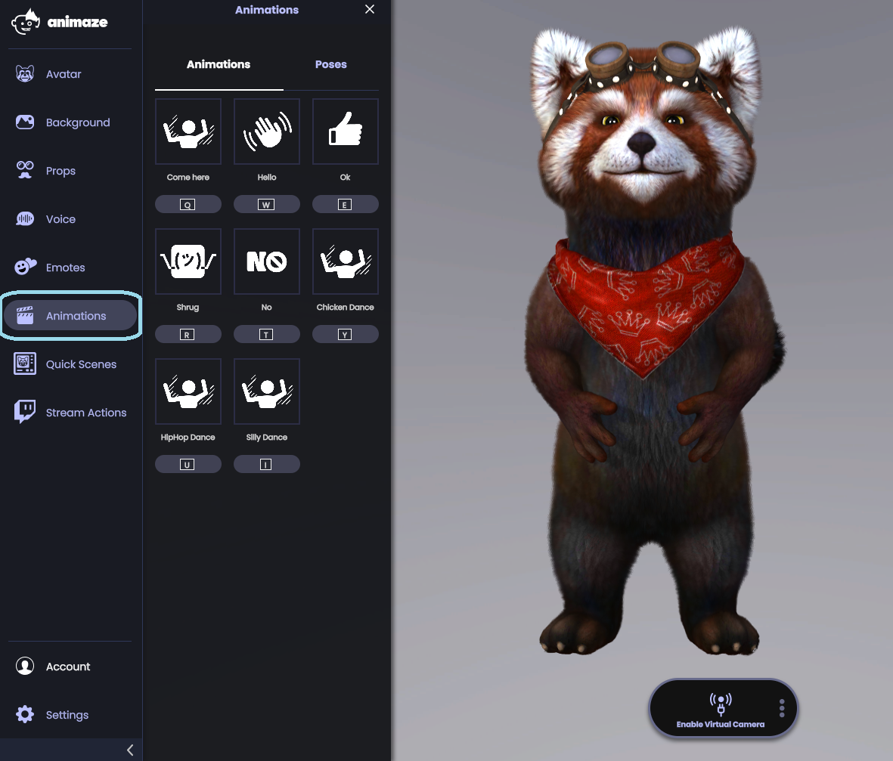
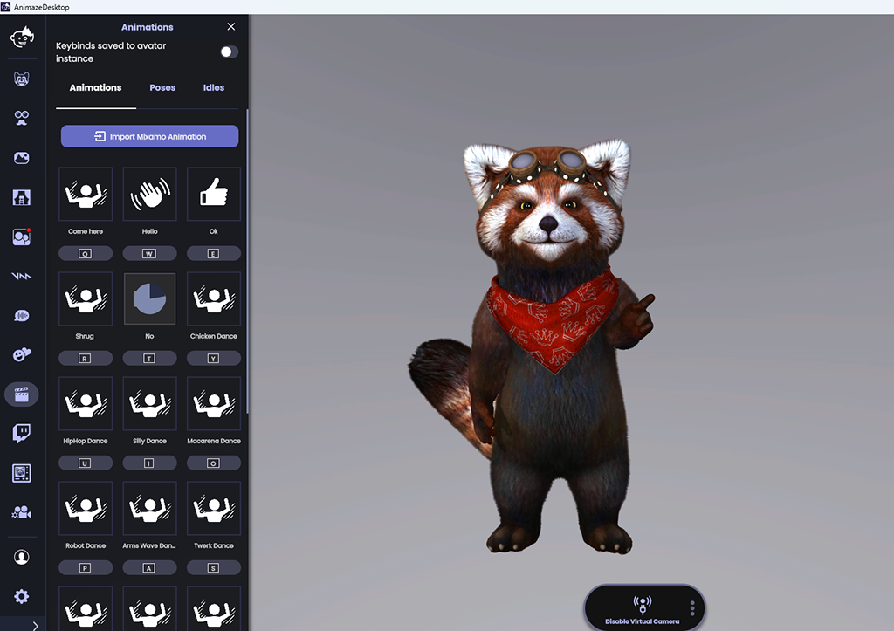
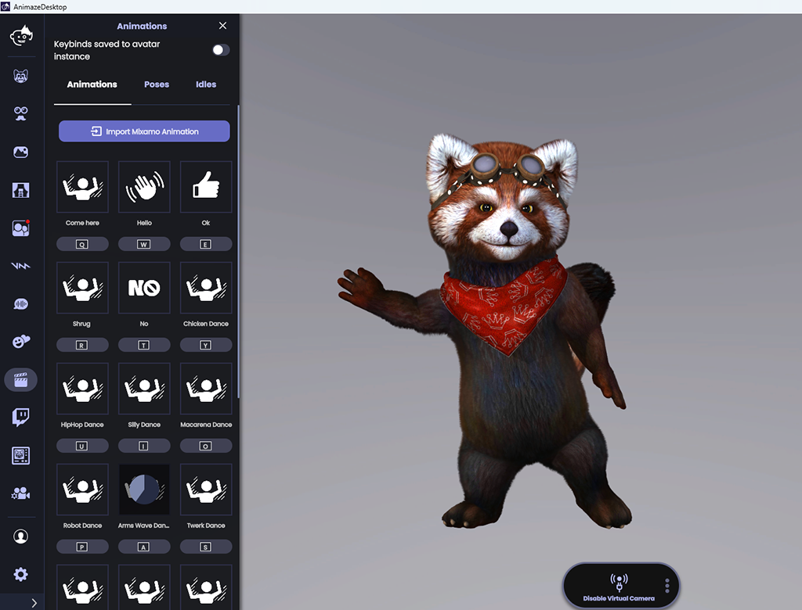
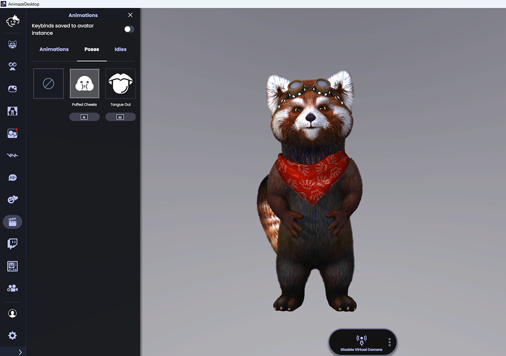

Animaze Desktop: How can I use avatar animations and special poses?
Both 2D and 3D avatars have a set of animations and poses, triggerable by keypress (usually Q, W, E, R, T).
Upon keypress, special animations will play. Once complete, the avatar returns to its neutral pose. Many avatars have a base set of special animations, such as waving and thumbs up. Some avatars have unique special actions (e.g., Howard the Piglet’s balloon animation).
Special poses change the avatar’s expressions and poses. A special pose remains active until the key that triggered it is pressed again. For example, if a Live2D avatar has a special pose that changes the expression from happy to sad, once triggered, the avatar will remain sad until you hit the same keypress again.
How to trigger special animations or special poses:
Tap on the Animations icon and the following menu will open.

Browse through the available animations and choose whichever you like the most

The Animaze app also has included full-body generic animations support, which translates into avatar dances. You can check them out in the Animations section as well!

If you want to explore further, check out the Poses tab as well. For example, Fluffo’s special pose is puffed cheeks.

PRO TIP: Use animations while recording a video or streaming!